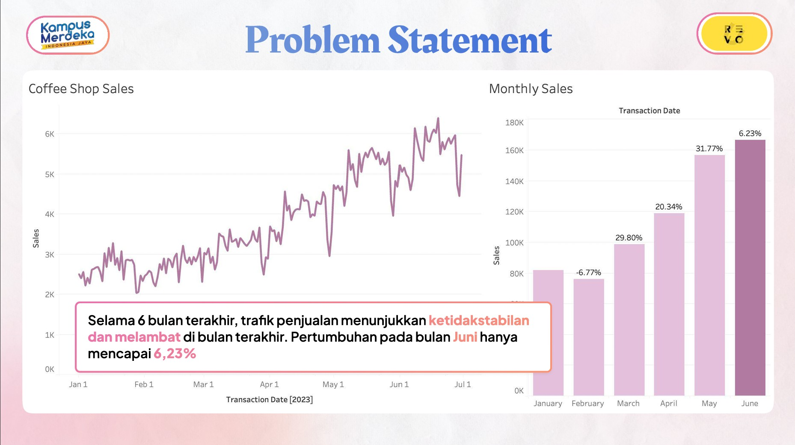
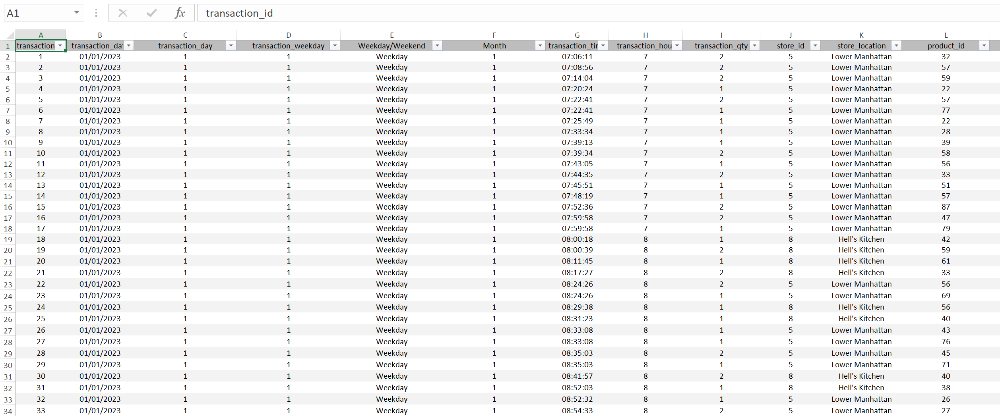
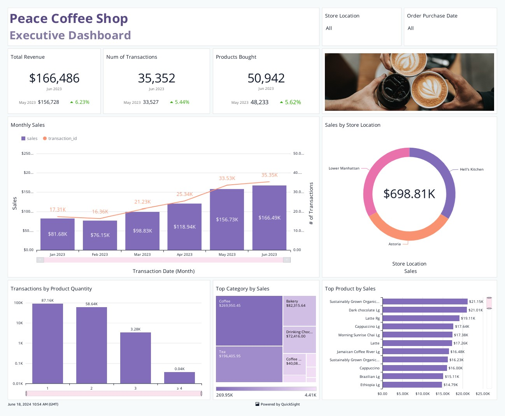

Timeline: May 2024 - Jun 2024



This project builds a dashboard to track unstable sales traffic using Excel and Amazon QuickSight. The dashboard provides clear visualizations to identify sales trends, detect anomalies, and support decision-making for business improvement.
Excel and AWS QuickSight
Back to Portfolio